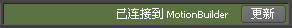

在将控制装备发送到 MotionBuilder 之前，请确保已设置了 Maya 项目，并已将要在 MotionBuilder 中使用的场景保存到当前设置的项目。
正在将新场景发送到 MotionBuilder
- 在大纲视图、视口或 HumanIK 窗口中，选择要发送到 MotionBuilder 的至少一个角色元素（绑定网格、角色骨架的关节或控制装备的效应器）和 Maya 对象。
请参见选择 HumanIK 角色数据。
- 选择“文件 > 发送到 MotionBuilder > 作为新场景发送”(File > Send to MotionBuilder > Send as New Scene)。
注： 如果“文件”(File)菜单中不显示“发送到 MotionBuilder”(Send to MotionBuilder)，则可能需要重新加载“OneClick”插件。请参见加载或卸载 Maya 插件。
MotionBuilder 启动并打开 Maya 发送的对象。现在 Maya 和 MotionBuilder 已连接在一起，如两者的应用程序状态栏所示。
 - 使用 MotionBuilder 设置动画或将运动捕捉数据应用到控制装备。
- 在 MotionBuilder 中，选择“文件 > 发送到 Maya(Send to Maya) > 更新当前场景”(File > Send to Maya > Update Current Scene)，以发送装备到 Maya。Maya 加载已设置动画的装备。
也可以单击 MotionBuilder 状态栏中的“更新”(Update)，以将场景发送回 Maya。

可以对场景中的对象进行一些更改和/或添加新对象，然后通过选择这些对象并单击更新按钮来更新其他应用程序。